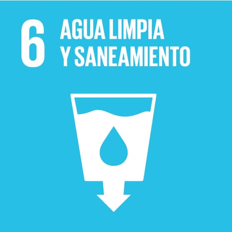

Según los datos recogidos por Ayuda en Acción a partir de la ONU, unos 2.200 millones de personas no tienen acceso a agua potable segura, 3.400 millones no tienen saneamiento seguro y 1.700 millones
no cuentan con servicios básicos de higiene en sus hogares. Más del 80% de las aguas residuales se vierte sin tratar en ríos y mares.
La población con agua potable gestionada de forma segura pasó de un 68% en 2015 a un 74% en 2024.